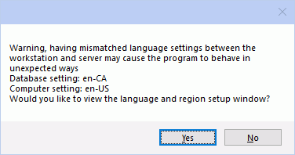
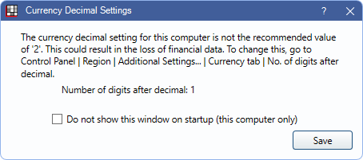

Region and Language
From the Windows Control Panel, open Region.

For the most part, Open Dental will look and behave similarly for everyone. However, the following are determined by Region and Language settings:
- Language Translations are only available when the Region and Language setting is set to a foreign language.
- Canada users must have their setting set to English (Canada) to view Canadian features.
- Currency symbols and date format are affected by Region and Language.
- Region and Language on the workstations should match the setting Language and region used by program found in Preferences.
After changing the Region and Language settings, restart Open Dental.
Troubleshooting
Problem: I type in a language that combines characters (e.g. Arabic, Korean) and I use IME keyboard. How do I allow composition typing in Open Dental?
Solution: Enable Text boxes use foreign language Input Method Editor (IME) composition in Preferences.
Problem: I receive this message when I start Open Dental.
Solution: This warning means the database setting for language and region is different than the computer's setting. You can change the computer setting to match the database setting, change the database setting to match the computer setting, or leave settings as is. You can also stop this warning from showing on this computer. In Preferences, click [...] next to Language and region used by program, then check the Do not show this window on startup box.
When launching Open Dental, I get a warning that the computer is not using the recommended decimal settings.
The workstation is currently set to use something other than two decimal places for currency. The current Windows setting is indicated in the warning. Follow the instructions in the warning to update the current setting in the Windows Control Panel. Check Do not show this window on startup (this conputer only) if you wish to keep this setting and no longer want to receive this warning.